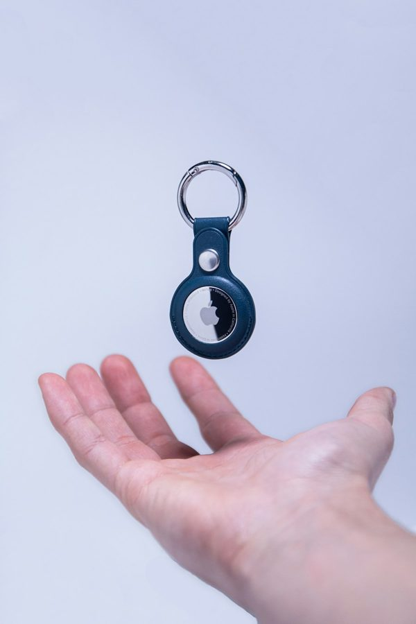

How to Choose a GPS Tracker for a Parent with Dementia
What to look for, what to avoid, and which devices actually work when it matters most.
By TechForDad · Updated October 2026
Health information: general information, not medical advice; it does not replace your parent's doctor, audiologist or pharmacist. Health facts link to their sources, and AI helps draft our guides (how we review products).
Table of Contents
Families often buy the wrong kind of tracker first: a Bluetooth tag instead of real GPS. This guide explains the difference so you can avoid that mistake.
Why GPS Trackers Actually Matter for Seniors
Wandering is one of the most frightening aspects of dementia caregiving. The Alzheimer's Association says six in 10 people living with dementia will wander at least once, and many do so repeatedly. If someone with dementia is not found within 15 minutes of disappearing, it advises calling 911 to file a missing person's report and telling the authorities the person has dementia. A GPS tracker with geofencing can alert family when a parent leaves a safe zone, which may shorten a search, but Alzheimer Society of Canada cautions that no device or system can guarantee a person will not get lost or will be found.
GPS trackers are also useful for seniors without dementia: an active 78-year-old who falls on a hiking trail or drives to an unfamiliar area benefits from the same technology.
Types of GPS Trackers for Seniors
Wearable GPS Watches
The most common format. Look like a regular digital watch. Include GPS, cellular connectivity, and typically a two-way call feature so the senior can contact family or family can call in. Best for: seniors who will accept wearing a watch. Key brands: Jiobit, AngelSense (with monitoring service), Bounce GPS.
Pendant / Clip-On Trackers
Small devices that clip onto a belt, bag, or lanyard, or wear as a pendant. Less visible than a watch. Best for: seniors who resist wearing a watch or want discretion. Key brands: Tile (basic location), Apple AirTag (family network), LandAirSea 54 (standalone cellular).
Shoe Insole Trackers
GPS placed inside a shoe insert. Invisible and doesn't require the senior's compliance. Best for: seniors with significant dementia who remove or refuse to wear devices. GTX Corp makes the primary product in this category. Battery life and accuracy are limited but compliance is unmatched.
GPS-Enabled Medical Alert Systems
Many mobile medical alert devices (like Lively Mobile2 and Medical Guardian MGMove) include GPS as part of their monitoring service. This is often the best option for seniors who are already wearing a medical alert, adding a separate GPS device may be redundant. See our Medical Alert Systems review for GPS-enabled options.
Key Features That Matter
- Geofencing alerts: you set a safe zone (the home, a neighborhood); the tracker sends an alert the moment your parent leaves it. This is the most important feature for dementia caregiving.
- Real-time vs. periodic location updates: real-time tracking updates every 30 to 60 seconds; periodic updates every 5 to 10 minutes. For active wandering, real-time is essential.
- Cellular network: most dedicated GPS trackers use cellular data independently; they don't require the senior to have a phone. Confirm which carrier (AT&T, T-Mobile, Verizon) and check coverage in your parent's area.
- Battery life: ranges from 12 hours (some wearables) to 7 days (passive trackers). For dementia caregiving, longer battery life or a charging schedule you can reliably maintain is essential.
- Two-way calling: allows the senior to call family or family to reach the senior directly through the device, without needing a phone.
- Waterproof rating: minimum IP67 (submersible to 1 meter). Seniors may wear the device in the rain or may not remove it before bathing.
- Monthly subscription cost: most cellular GPS trackers require a cellular plan: $15 to 35/month. Factor this into the total cost.
Our Top Picks for 2026
- AngelSense GPS + Monitoring: purpose-built for dementia caregiving. Includes a monitoring service, two-way listening (you can hear what's happening around the senior), real-time GPS, and geofencing. Higher monthly cost ($40 to 60) but the most complete solution for serious wandering risk.
- Jiobit Smart Tag: compact, durable, excellent geofencing, works on AT&T/T-Mobile. Better for active seniors than dementia caregiving but excellent build quality.
- Lively Mobile2: medical alert with integrated GPS. Best choice if you need both a medical alert and GPS in one device. See our full medical alert review.
- GTX GPS Shoe Insole: for seniors who remove every device you give them. Accuracy is lower than wrist-worn devices but compliance is guaranteed.
What to Avoid
- Bluetooth-only trackers (Tile, AirTag): these rely on other people nearby having the manufacturer's app on their phone to update location. They are not suitable for active wandering situations in lower-density areas.
- Cheap no-brand GPS trackers from online marketplaces: the GPS accuracy, app quality and customer support of no-name trackers are hard to check, because there is often no maker support page or published specification.
- Devices with short battery life and complex charging: a tracker that's dead when your parent wanders is worse than no tracker, because it creates false confidence.
How to Bring It Up Without a Fight
Many seniors resist GPS trackers, viewing them as surveillance. If your parent has enough cognitive awareness to object, approach it as a two-way safety tool, "this means you can call me anytime you need help", rather than a monitoring device. For seniors with more advanced dementia, the conversation may not be necessary, but involving their physician can help frame it as a medical recommendation.
Related Guides
See our full review of Best GPS Trackers for Seniors with specific product ratings, and our Fall Prevention Tech Guide for the broader safety technology picture.
Sources and Where to Check the Details
Prices, plans and features change, so the maker or provider's own page is the final word. These are the pages behind this guide, plus independent reviews you can compare with ours. Links last checked September 30, 2026. See how we review products.
From the makers and providers
- AngelSense How the company describes its monitoring and alerting service
- Jiobit: Smart Tag Plan price, update rate and battery life as the company lists them
Health and medical organizations
- Alzheimer's Association: Wandering How common wandering is and when to call 911
- Alzheimer Society of Canada: Tracking devices Respecting the person's wishes and the limits of tracking devices
Prices and features change, so confirm them on each maker's page.